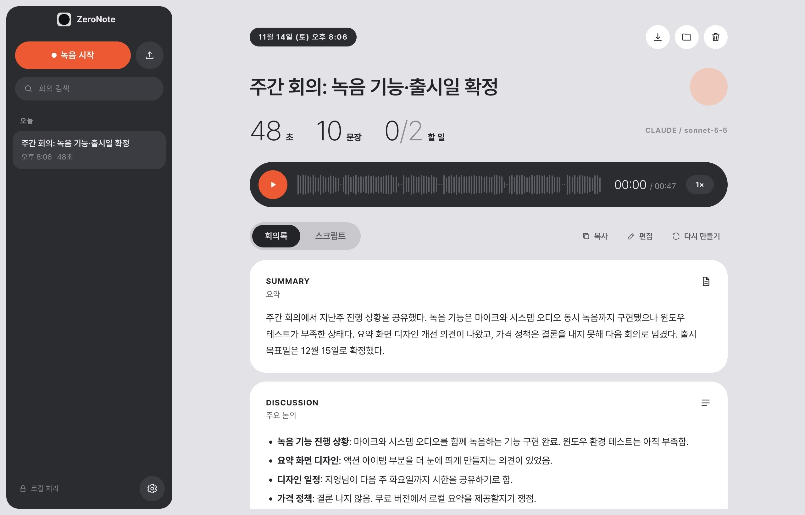

회의에 봇이 들어가지 않아요
컴퓨터 소리를 직접 녹음하니 참석자 목록에 낯선 녹음 봇이 뜨지 않습니다. 화면 공유 중에도 티 나지 않아요.
유료 플랜 없음
녹음, 받아쓰기, 요약까지 모든 기능이 평생 무료입니다. 로그인 없이 바로 녹음하세요. 원하면 텍스트 회의록을 내 Google Drive에 동기화할 수 있어요.
macOS 13 이상 · Windows 10·11 (x64)

Demo
Privacy
컴퓨터 소리를 직접 녹음하니 참석자 목록에 낯선 녹음 봇이 뜨지 않습니다. 화면 공유 중에도 티 나지 않아요.
받아쓰기는 이 컴퓨터에서 whisper.cpp로 처리합니다. 인터넷이 끊겨도 녹음하고 받아 적을 수 있어요.
기본 요약은 앱에 든 로컬 AI가 무료로 합니다. 더 정확한 요약을 원하면 내 Claude나 ChatGPT 계정을 연결하세요. 키는 이 컴퓨터에만 저장됩니다.
Features
말하는 동안 20~30초마다 스크립트가 쌓입니다. 한국어에 맞춘 Large v3 Turbo 모델이 기본이고, 영어·일본어·중국어도 받아 적어요.
녹음이 끝나면 요약, 주요 논의, 결정 사항, 할 일을 정리합니다. 할 일은 체크하면서 챙기고, 회의록은 직접 고칠 수 있어요.
파형에서 말한 구간이 한눈에 보입니다. 문장을 누르면 그 지점부터 재생되고, 스크립트 안에서 단어를 찾을 수 있어요.
휴대폰으로 녹음한 m4a, mp3, wav 파일도 넣기만 하면 같은 방식으로 받아 적고 정리합니다.
12:48
12:02지난주 진행 상황부터 공유해 주세요.
12:21녹음 기능은 윈도우 테스트만 남았습니다.
12:40그럼 금요일까지 마무리해 주세요
요약
녹음 기능 진행 상황을 점검하고, 출시일을 12월 15일로 확정했습니다.
할 일
00:42마지막으로 출시일은 12월 15일로 확정합니다.
00:46수고하셨습니다.
Pricing
ZeroNote
₩0평생
녹음부터 받아쓰기, 요약까지 모든 기능을 평생 무료로 씁니다. 체험 기간도, 기능 제한도 없어요.
더 정확한 요약 (선택)
내 계정사용한 만큼
긴 회의나 세부 내용까지 정확하게 정리하려면 내 Claude나 ChatGPT 계정을 연결하세요. 요금은 각 서비스가 내 계정으로 청구합니다.
Claude Pro·ChatGPT Plus 같은 구독 요금제는 다른 앱에서 쓸 수 없어 API 키가 따로 필요합니다. Claude Max·Team 요금제에는 매달 쓸 수 있는 API 크레딧이 포함되어 있어요.
FAQ
네. ZeroNote에는 유료 플랜도 체험 기간도 기능 제한도 없고, 앞으로도 무료입니다. 녹음, 받아쓰기, 스크립트, 다시 듣기는 모두 이 컴퓨터에서 처리되기 때문에 비용이 들지 않고 시간 제한도 없습니다. 요약도 앱에 든 로컬 AI가 무료로 합니다. 더 정확한 요약을 위해 Claude나 ChatGPT 계정을 연결한 경우에만 그 사용료가 각 서비스에서 청구됩니다.
아니요. 음성은 이 컴퓨터에 저장되고 받아쓰기도 이 컴퓨터에서 합니다. 기본 요약도 이 컴퓨터의 로컬 AI가 하므로 텍스트도 밖으로 나가지 않아요. Claude나 ChatGPT 계정을 연결한 경우에만 받아 적은 텍스트가 그 서비스(Anthropic 또는 OpenAI)로 전송됩니다. 그 밖에 앱이 보내는 것은 첫 실행에서 허용한 경우의 익명 사용 통계(어떤 기능을 썼는지)뿐이고, 회의 내용·제목·파일 이름은 들어가지 않아요. 설정에서 언제든 끌 수 있습니다.
ZeroNote 설정의 '요약 AI'에서 Claude나 ChatGPT의 '연결하기'를 누르면 키 발급 페이지가 열립니다. 내 계정으로 로그인해 키를 만들고 붙여 넣으면, ZeroNote가 바로 확인한 뒤 연결합니다. 키는 운영체제 키체인으로 암호화되어 이 컴퓨터에만 저장됩니다.
앱에 든 로컬 AI가 처음 한 번 받은 모델로 요약합니다. 메모리 8GB 이상이면 Qwen3 4B(2.5GB), Apple Silicon에 메모리 16GB 이상이면 더 정확한 Gemma 3 12B(7.3GB)를 추천해요. 회의 흐름과 할 일은 잘 잡지만 작은 모델이라 세부 내용을 놓칠 수 있습니다. 중요한 회의는 설정에서 Claude나 ChatGPT 계정을 연결해 더 정확하게 요약할 수 있어요. 요약은 언제든 다시 만들 수 있습니다.
컴퓨터에서 나는 소리를 직접 녹음하므로 Zoom, Google Meet, Microsoft Teams, Discord처럼 소리가 나는 앱이면 모두 됩니다. 대면 회의는 마이크로 녹음해요. 이어폰을 쓰면 상대방 목소리가 더 깨끗하게 남습니다.
macOS 13 이상의 Apple Silicon(M1 이상)과 Intel Mac, Windows 10·11(x64)에서 사용할 수 있어요. 음성 인식 모델(약 570MB)과 요약 모델(2.5GB부터)을 처음 한 번 내려받아야 하고, 메모리 8GB 이상을 권장합니다. 자세한 사양은 다운로드 페이지에 있어요.
회의를 녹음하기 전에는 참석자에게 녹음 사실을 알리고 동의를 받아 주세요. 지역과 회사 규정에 따라 녹음 고지가 법적으로 필요할 수 있습니다.